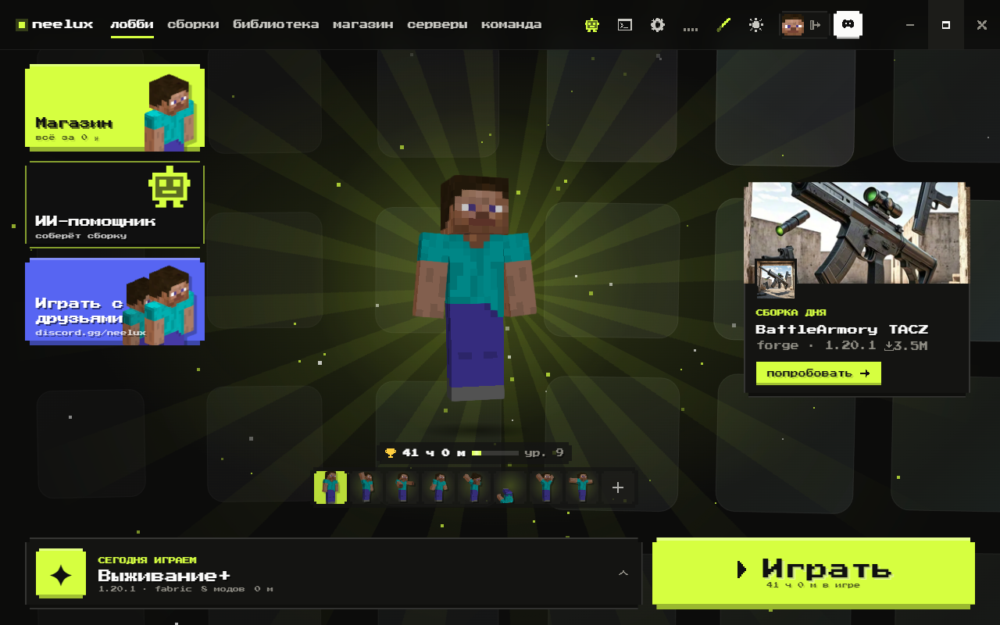
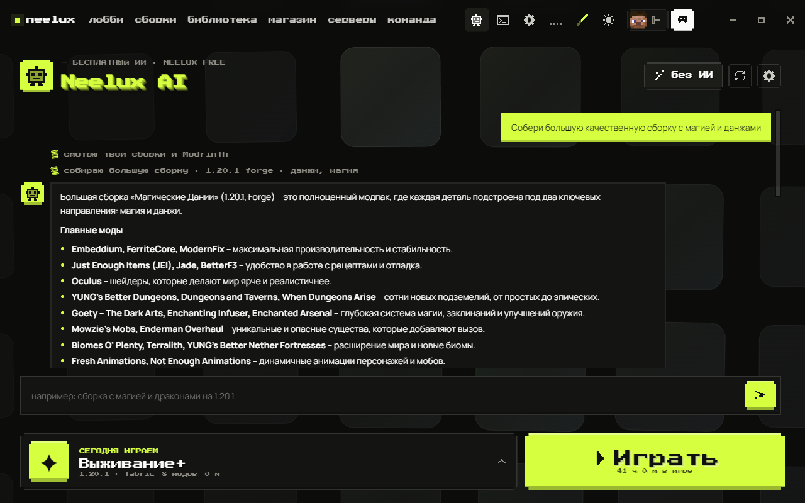
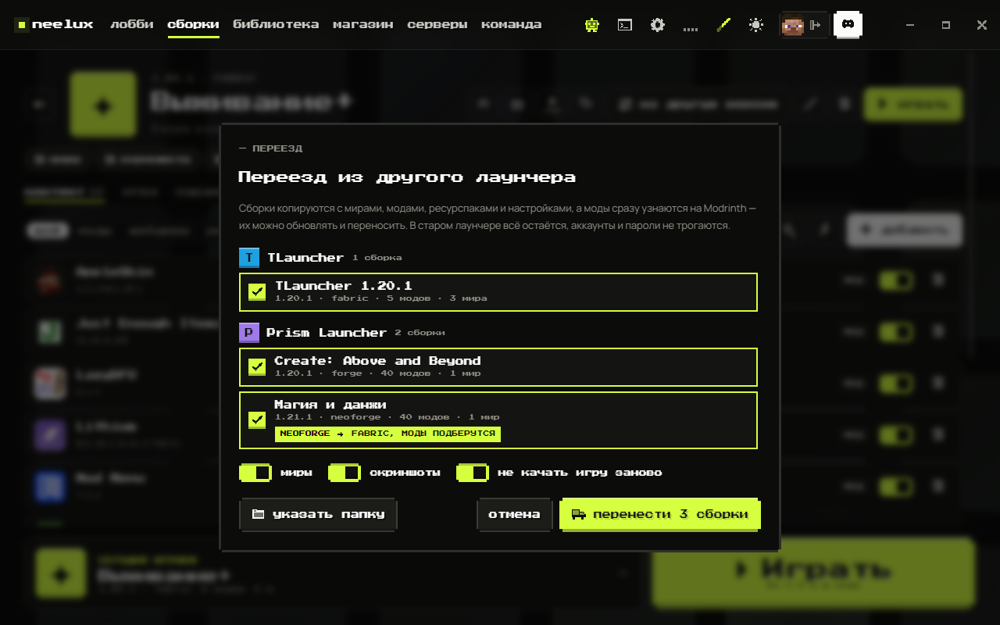
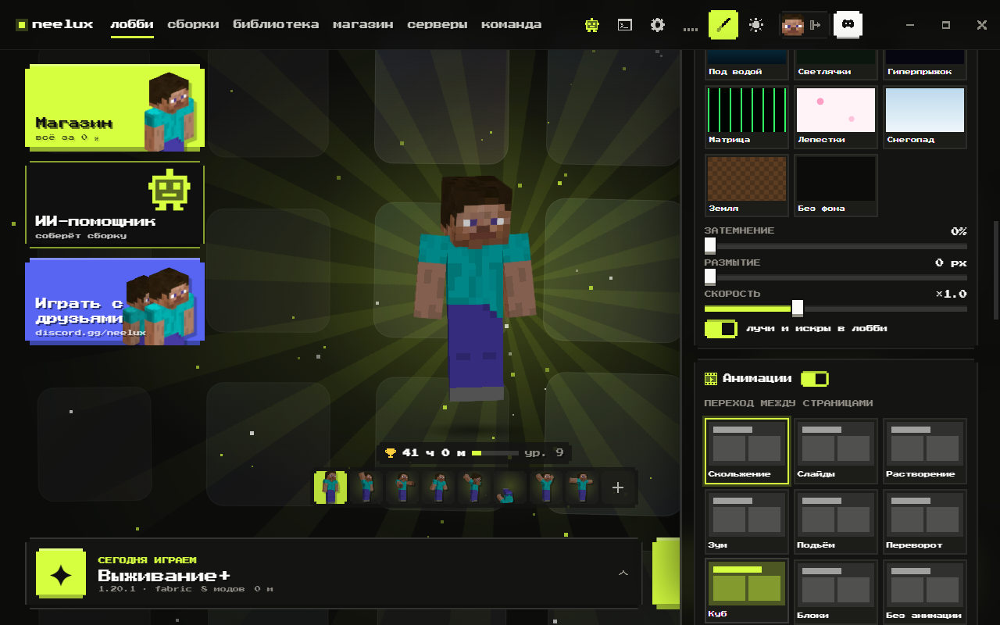

версия 1.1 · бесплатно навсегда
Minecraft
с модами —
в один клик.
Лаунчер, который сам собирает сборку, чинит вылеты и переносит миры из TLauncher. Без рекламы, без доната, без лишних окон.
- без рекламы
- Windows 10 / 11
- Java ставится сама
- русский интерфейс

— знакомо?
Хотел поиграть с модами,
а полдня чинил сборку
— neelux ai · бесплатно
Скажи, во что хочешь играть.
Сборку соберёт ИИ.
«Сборка с магией и драконами на 1.20.1» — и через минуту готов большой модпак без конфликтов: оптимизация, шейдеры, данжи, новые мобы. ИИ объяснит вылет и перенесёт сборку на новую версию.
- подбирает моды с Modrinth и ставит зависимости
- проверяет совместимость до запуска
- работает без своего ключа

— переезд за минуту
Уходишь с TLauncher?
Миры заберём с собой.
Лаунчер сам находит TLauncher, Prism, CurseForge, Modrinth App и официальный лаунчер. Отмечаешь сборки галочками — миры, моды и настройки копируются. В старом лаунчере всё остаётся.
- миры, моды, скриншоты, настройки
- игру не нужно качать заново
- аккаунты и пароли не трогаются

— кастом
Лаунчер, который
выглядит как твой.
12 непохожих тем, живые и видеофоны, 9 анимаций переходов, раскладка лобби перетаскиванием. Попробуй прямо тут — переключи тему в шапке сайта.
- 3D-персонаж с 20 эмоциями
- скины, плащи и крылья за 0 ₽
- делись своей темой кодом

— что ещё внутри
Всё, что нужно, чтобы играть
— сравнение
Чем NEELUX лучше
обычного лаунчера
— как выглядит
Скриншоты из лаунчера
— установка
Три шага — и ты в игре
- 1Скачай установщик
Один файл с этой страницы. Без рекламы, «помощников» и сторонних программ.
- 2Запусти
Если Windows покажет синее окно SmartScreen — «Подробнее» → «Выполнить в любом случае». Так бывает с каждой новой программой без платной подписи.
- 3Введи ник и играй
Java и нужная версия игры скачаются сами. Есть старый лаунчер? Нажми «переезд».
— безопасность
Файл можно проверить.
Нам нечего скрывать.
Уникальный «отпечаток» установщика. Если в файле изменится хоть один байт, отпечаток будет другим.
—
- не просит пароль от Microsoft — игра запускается по нику
- не собирает данные и не ставит ничего лишнего
- свои ключи ИИ (если подключишь) хранятся на твоём ПК зашифрованными
— вопросы
Частые вопросы
Готов? Погнали.
Скачай, введи ник — через минуту ты в игре.
Скачать NEELUX Launcherустановщик · .exeWindows 10 / 11 · 64-бит ·